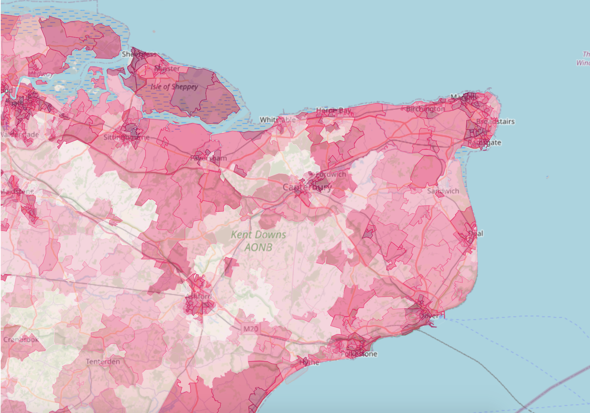

Community Lens is a prototype tool created from a 5 week design sprint by Hetco Design, DataKind and CAST. The project was funded by the National Lottery.
Do you want more features or data added to the tool? Please fill out the Request feature and data set form.
